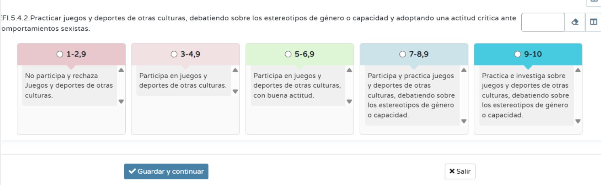

CRITERIO EF 4.2.a
Por otra parte, para evaluar el criterio EF.5.4.2 enfocado en "Practicar juegos y deportes de otras culturas, debatiendo sobre estereotipos de género o capacidad", se utilizará una rúbrica elaborada con el Cuaderno de Séneca. Este instrumento permite valorar la calidad y el grado de desarrollo de la competencia adquirida.

Imagen de Elaboración Propia.
¿CÓMO SE OBTIENE LA NOTA DEL CRITERIO?
La calificación se asigna en función del nivel de logro alcanzado por el alumno durante la práctica y el debate:
Nivel Insuficiente (1 - 2,9): El alumno muestra una actitud negativa, no participa o rechaza activamente las manifestaciones culturales propuestas.
Nivel Inicial (3 - 4,9): Participa de forma mecánica en los juegos y deportes, sin implicarse en el análisis crítico.
Nivel Suficiente (5 - 6,9): Participa con buena actitud y predisposición, cumpliendo con la parte práctica de la sesión.
Nivel Notable (7 - 8,9): Además de practicar, el alumno es capaz de participar activamente en el debate sobre los estereotipos de género o capacidad detectados en el juego.
Nivel Sobresaliente (9 - 10): Es el nivel máximo. El alumno no solo practica y debate, sino que también investiga de forma autónoma y adopta una actitud crítica y proactiva ante comportamientos sexistas.